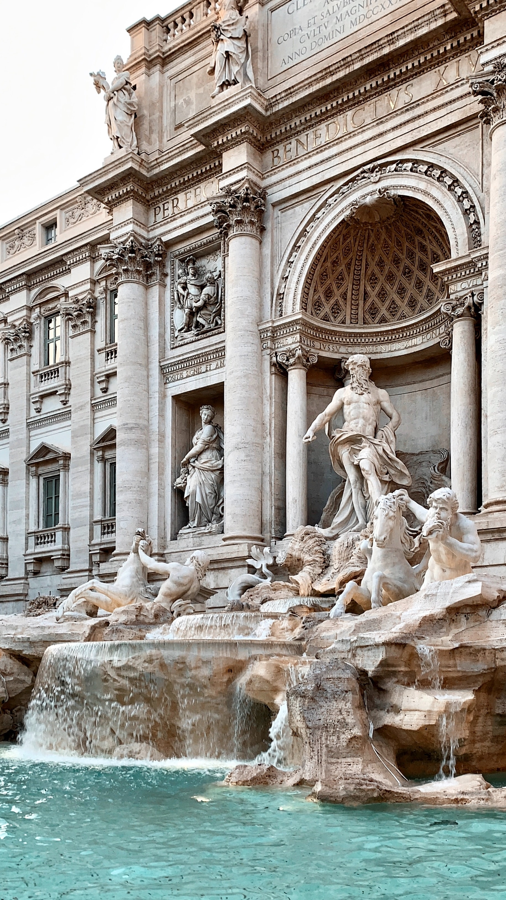

Он не состоит из одной площади. Его составляет комплекс исторических улиц, палаццо и переулков.
К самым древним относятся территории, расположенные вокруг рыночной площади Кампо Деи Фьори и Пьяцца Навона, а также улицы, по которым можно дойти до Пантеона.
Картинки по запросу исторический центр рим Здесь можно прикоснуться к периоду Античности и увидеть сооружения, заставшие расцвет могучей империи:
знаменитый Форум, легендарный Колизей, древний Пантеон и множество других грандиозных руин. Также Рим - это уютные уличные кафе и траттории, знаменитые площади и фонтаны, дворцы и сады.
